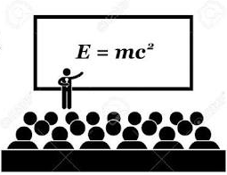
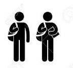

Academic Life
During our academic life in BSc in Engg(CSE), we have to study various courses,but many times we don't know why have to learn programming courses,algorithms,database etc. Sometimes we try to memorise programming codes to achieve a minimum CGPA,that ultimately brings no result & our academic life becomes more difficult to survive.
Less Attention
Being aware of raising CGPA we put a less care on major courses like programming language,database,website etc. Though that courses are so much important for our job carrier, we don't know their implementation or practical uses and spend our whole academic life putting less attention and imporatance on those.
Effective Practise
So in order to build a successful future with the best uses of academic courses we have to practise and work on various projects,write articles,make creative ideas based on our every semester study. For this task our course teachers will help us using this website.
Bright Future
By this,we will be more perfect for our future life from our academic life. Our academic result will be enlighten with the power of effective practise of various articles,project metarials. We can make sure the best uses of our time during every semester.